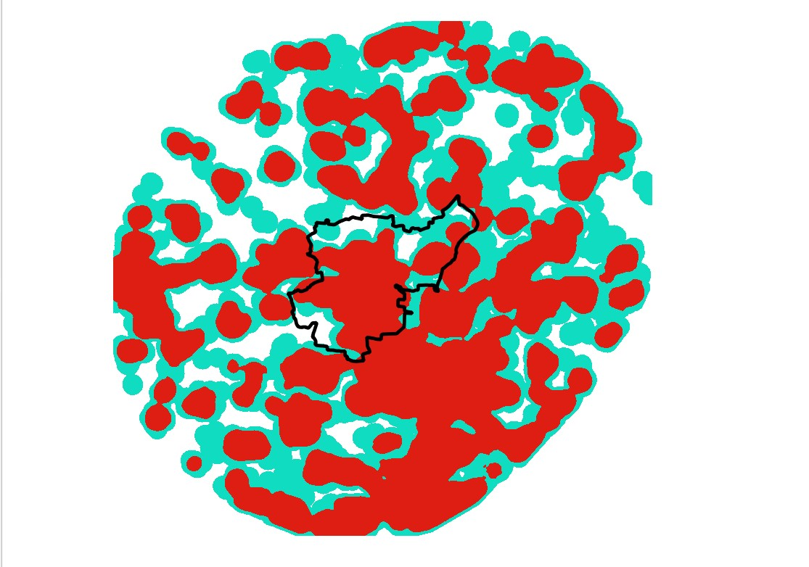

February 27, 2026, 10:19 AM CEST
This project models and visualises Above-Ground Biomass (AGB) patterns and disturbance-driven biomass change across North Rhine–Westphalia (NRW) for 2019-2022.
AGB was predicted at 100 m resolution by fusing SAR, Sentinel-2 optical indices, GLCM textures, GEDI LIDAR, and environmental covariates. Disturbance severities were derived from annual change metrics using calibrated thresholds.

 October 20, 2025, 10:19 AM CEST
October 20, 2025, 10:19 AM CEST
The EV Charging Stations Activity Dashboard is a real-time, data-driven web application that visualizes the spatial and temporal dynamics of electric vehicle (EV) charging stations across Hamburg, Germany.
It integrates open IoT data from the Hamburg SensorThings API with automated data ingestion, cloud database synchronization, and interactive analytics built in Streamlit.


This interactive web application enables users to upload images of concrete surfaces and instantly receive AI-powered crack detection with clear visualizations through a user-friendly Streamlit interface. Users can download the processed images with cracks highlighted, along with a detailed report that includes the number of pixels covered and the estimated total crack surface area. The app leverages a deep learning model trained on a balanced dataset to accurately identify and highlight cracks in concrete surfaces.

This project utilizes Sentinel-5P (for carbon monoxide, CO, concentration) and VIIRS (for nighttime lights as an energy proxy) to monitor urban air quality and urbanization patterns across all states of Germany between 2019 and 2023. This work leverages advanced satellite data to explore air pollution and energy consumption patterns, offering insights into urban environmental health and human activity.

This project utilized the Deepness Plugin in QGIS to perform building segmentation using a pretrained model from the ramp Building Footprint Dataset, tested on Feuersee and Konradin-Kreutzer Weg at 40cm and 50cm resolutions.
June 30, 2025, 10:19 AM CEST
This is a spatial analysis project mapping the urban footprint of the Beitigheim-Bissingen municipality (Baden-Württemberg, Germany) using QGIS and ESRI Land Cover data. The primary objective was to assess patterns of urbanization within a 10 km buffer zone
This offers insights into built-up intensity and suburban expansion around the municipality.


This project models a 3D flood scenario in Mannheim's city center using QGIS. Digital elevation models (DEM), building footprints, and OpenStreetMap data were used to simulate inundation and visualize flood-prone areas under low elevation flood conditions.

This is an interactive Google Earth Engine (GEE) application designed to estimate and visualize chlorophyll levels in five key lakes of Baden-Württemberg; Titisee, Bodensee, Illmensee, Federsee, and Schluchsee. This interactive tool leverages Sentinel-2 satellite data to compute the Normalized Difference Chlorophyll Index (NDCI) from 2018 to 2024.

A collaborative project creating a 3D energy dashboard for Stöckach using Cesium and a Web AR scene with Three.js, featuring interactive visualizations and AR object placement.

A spatial decision-making project applying geomarketing and GIS techniques to identify optimal sites for new IKEA stores in Germany. Highlights include purchasing power analysis, Euclidean distance modeling, and location-allocation for two suitable cities: Trier and Ingolstadt.